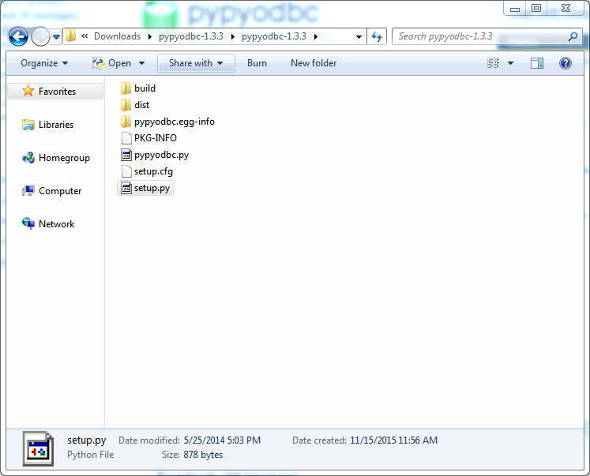
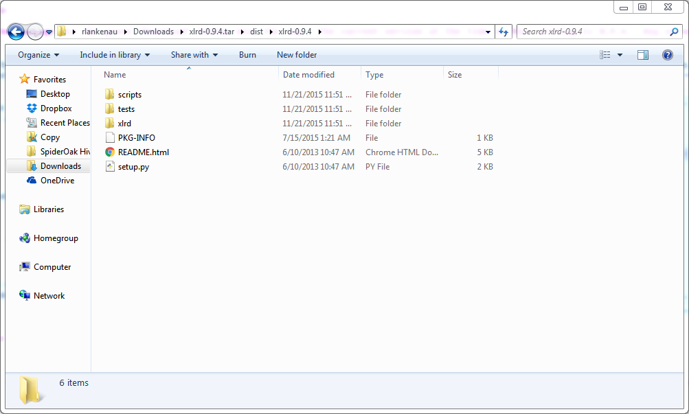

Installing Python
Python is a very common scripting language, used extensively to tie together different computer systems. You don't need to know how to write python to use the software included here, but it does need to be installed on your computer. You'll need administrator rights on your computer for the majority of the installation process, so if you have a limited-rights account, you'll need to contact your IT department to do the installation for you. Just to be sure they include everything you'll need, pass along this guide so they know what they need.
Installing the main Python packages
The official web site for Python is www.python.org, and you can download versions for many different operating systems there. Since we're working with Access databases, we'll just cover how to install Python on Windows (Access doesn't work on Mac).
Python installer packages are available at www.python.org/downloads, and the newest at the time of this writing is 3.5.0. That should work fine for us, so please go download that file now. The version linked from the main downloads page is a 32-bit version. Most computers made in the last decade are 64-bit, so please make sure to install the 64-bit package. Here's a direct link. Any version greater than 3.3 should work fine.
Once you've downloaded the file, double-click on it to run the installer. You should get a screen like this:
If you have preferences for where things should be installed, go ahead and choose the "Customize Installation" option. I assume if you have preferences about such things, you know what you're doing, so I'm not going to cover the details of that process. Once you're done setting your options, hit the 'Back' button in the installer.
To start the installation process, click "Install Now". Windows will ask you if you want to allow the program to make changes to your computer. Click "Yes" to proceed. Once you've told Windows that it's okay, the installation process will take a while, so this would be a good time to get a cup of coffee.
If everything goes well, you should see a window that looks like this:

Once you get there, you're in good shape and can click "Close".
Installing other software we need
The Python package we installed in the first step includes the basic software you need to run Python programs. We'll be doing some specialized things, so we need some additional packages.
pypyodbc
The first additional package we need is called pypyodbc, and it lets us use Microsoft Acces and Excel files from Python programs using the Open Database Connectivity standard (ODBC).
Go to the pypyodbc page on python.org, and download the package via the green "Download" button near the top. The current version at the time of this writing is 1.3.3. Any newer version starting with 1 should be fine. (e.g. 1.9.3 is okay, 2.0.1 might not be.)
The file is just a zip file, so the first thing to do is unzip it. It will create a new folder called pypyodbc-
You should see at least four files and one folder. To install, double-click on the "setup.py" file. If Python is set up correctly, it should begin the installation. There's no fancy graphical interface to this process, but you may see a window pop up with some text and then disappear. Two new folders will also appear in the folder:

If you see those two files, the installation succeeded.
xlrd
The next package is called xlrd, and allows us to access Microsoft Excel files directly.
Go to the xlrd page on python.org, and download the package via the green "Download" button near the top. The current version at the time of this writing is 0.9.4. Any version starting with 0 should be fine. (e.g. 0.9.7 is fine, 1.0.0 might not be.)
The file has the extension .tar.gz, which is a gzipped tar file. You'll need a slightly more advanced unzip program to extract this file. Either 7-Zip or WinRAR will handle files of this type. I suggest 7-Zip, and have documented the installation process assuming that's what you're using. If you already have WinRAR installed, I assume you know how to use it. It should be similar to the process described below for 7-Zip. If you don't have either, I've documented the installation of 7-Zip in Appendix E.
The file is really a tar file which has been compressed with gzip. When you extract it (by right-clicking and selecting "Extract to xlrd-0.9.4.tar" from the 7-Zip menu), it will just decompress the file, producing a directory called xlrd-0.9.4.tar. Within this directory, there is a "dist" directory which contains a file called xlrd-0.9.4.tar (not to be confused with the directory of the same name). Right-click on this file, and select "Extract Here" from the 7-Zip menu.
You should get a directory which looks just like this:

We need to copy the full path of the folder you just extracted for the next step. Click on the folder's address bar where the highlighting is shown in the image below.
The address bar should change, so you can see the entire path of the folder. The path will already be highlighted, and you can press Ctrl-C to copy it.
This install process is a bit more complex than the previous package, so we'll need to run the commands from the windows shell. Click on the start menu, and type "cmd" in the search box at the bottom. A program should appear in the search results called "cmd.exe". Click on this, and you should see a window that looks similar to the one below. It will say "C:\Users\your_user_name>".
Type the following command into the window, with a single space after it, but don't hit enter yet:
cd
Now right-click on the window, and select "Paste" to insert the path you copied in the earlier step. Once the path is pasted in, you can hit enter to execute the command. The window should show something that looks like this:
Now type the command below, and hit enter.
python setup.py build install
You should see a lot of text scroll by, and the final line should look like this:
Finished processing dependencies for xlrd==0.9.4